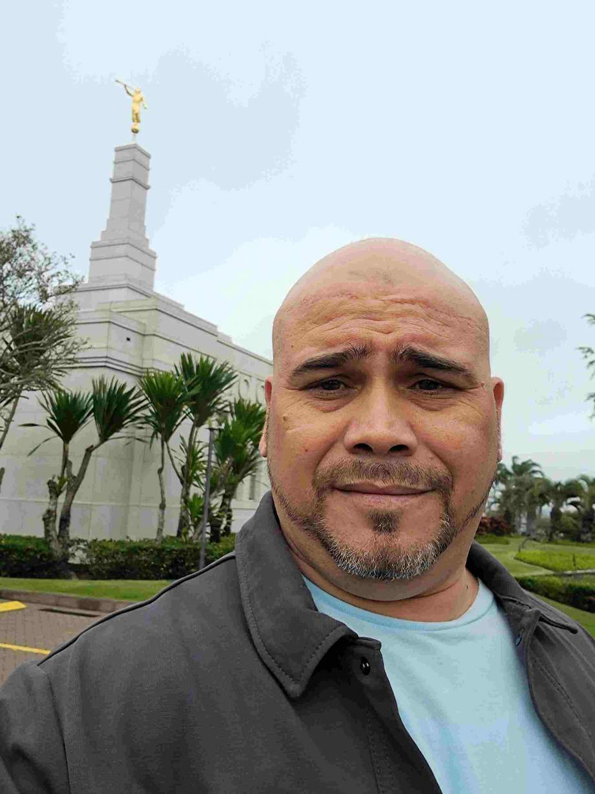

Jose Eduardo Clemente | WDD 130

Sou marido de Thais Helane e pai de quatro filhos incríveis: Rhavel (15), Cecília (9), Sophia (5) e Isabella (3). Minha família é a base de tudo o que faço. Sou movido por uma sede constante de conhecimento. Isto me levou a duas conquistas a primeira foi a buscar por conhecimento espiritual que levou tornar-me um membro de A Igreja de jesus Cristo dos Santos dos Últimos Dias, a segunda buscar conhecimento acadêmico e aos 33 anos me formei em Ciências Contábeis e atualmente decidi mergulhar no universo da tecnologia e estou cursando Desenvolvimento Software pela BYU-Idaho. Quando não estou servindo voluntariamente na Igreja em outros momentos de lazer irão me encontrar tocando violão, jogando futebol ou simplesmente rodeado pela minha família e bons amigos.